Yoon SeoYeon
SeoYeon (윤서연) · S1 · Leader · Coréenne
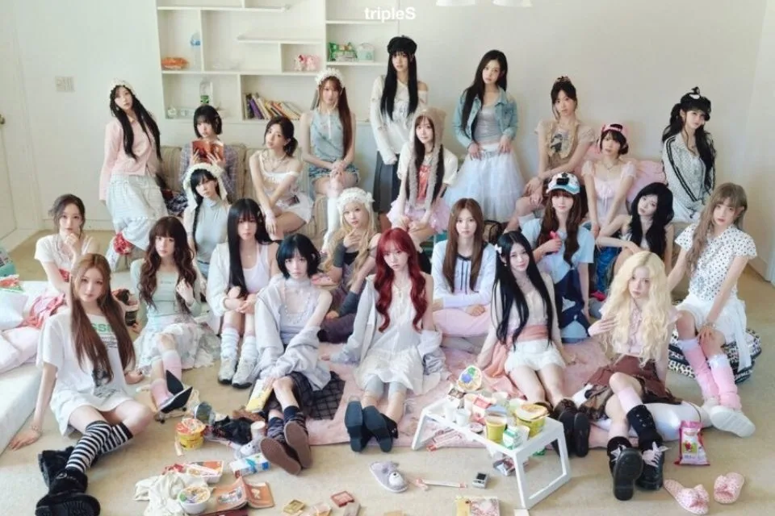
K-POP
Découvre tripleS et les profils de ses membres sur IBASE Asian Pop.
Ouvrir la fiche interactiveHistoire : tripleS (트리플에스, aussi SSS pour « Social Sonyo Seoul ») est un groupe de 24 membres de MODHAUS, au concept très particulier : les membres tournent entre le groupe complet, des sous-unités et des activités solo, selon les votes des fans, qui se font avec des cartes numériques appelées « Objekts ». Chaque membre est numérotée par ordre de révélation, de S1 (Yoon SeoYeon, 1er mai 2022) à S24 (JiYeon, 4 avril 2024). Le groupe a débuté le 13 février 2023 avec l'EP « Assemble ». Parmi les sous-unités : +(KR)ystal Eyes, Acid Angel from Asia, Acid Eyes, LOVElution, EVOLution, NXT, Aria, Glow, Visionary Vision, ∞! (unité japonaise), Alphie, ainsi que les unités zenith, neptune, moon et sun. Sources : KProfiles, DK Blog.
Débuts : 13 février 2023 (EP « Assemble »)
Agence : MODHAUS
SeoYeon (윤서연) · S1 · Leader · Coréenne
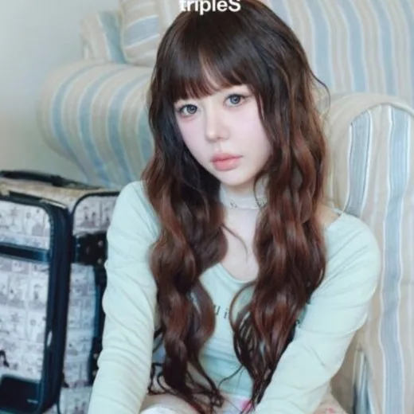
HyeRin (정혜린) · S2 · Main Dancer · Coréenne
JiWoo (이지우) · S3 · Main Vocalist · Coréenne
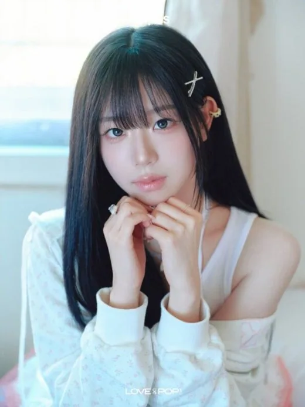
ChaeYeon (김채연) · S4 · Membre expérimentée · Coréenne
YooYeon (김유연) · S5 · Leader, Center · Coréenne
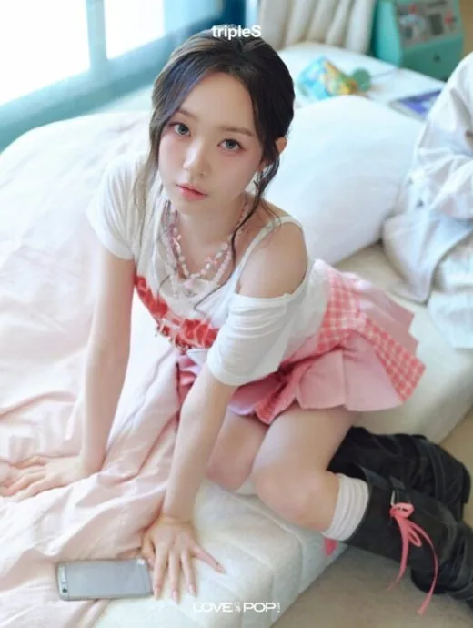
SooMin (김수민) · S6 · Mood-maker · Coréenne
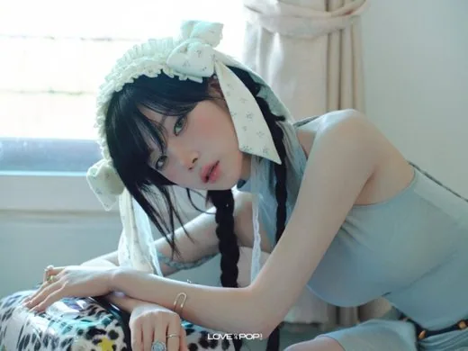
NaKyoung (김나경) · S7 · Main Vocalist, Main Dancer · Coréenne
YuBin (공유빈) · S8 · Lead Dancer · Coréenne
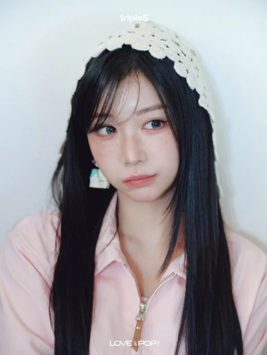
Kaede (카에데) · S9 · Center, Main Dancer · Japonaise
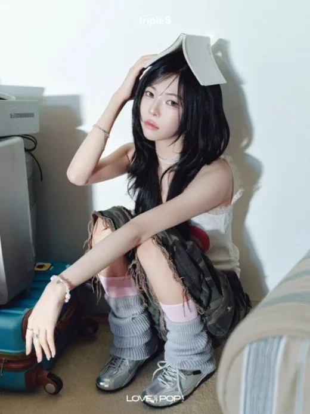
DaHyun (서다현) · S10 · Main Vocalist, Leader · Coréenne
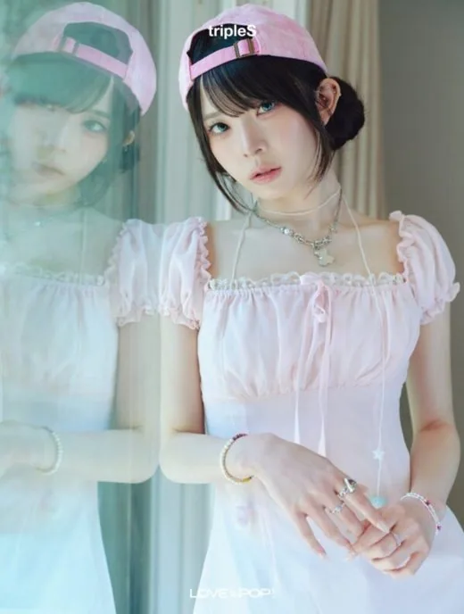
Kotone (코토네) · S11 · Main Rapper · Japonaise
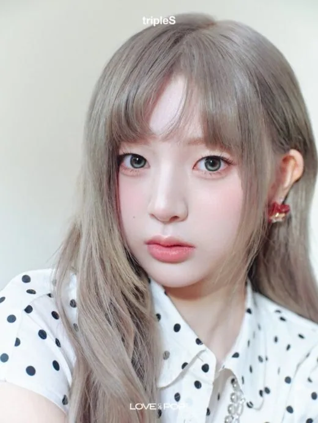
YeonJi (곽연지) · S12 · Membre · Coréenne
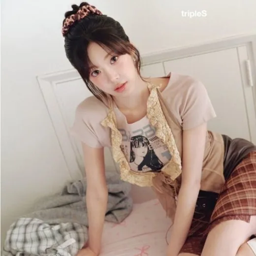
Nien (니엔) · S13 · Membre · Taïwanaise-Vietnamienne
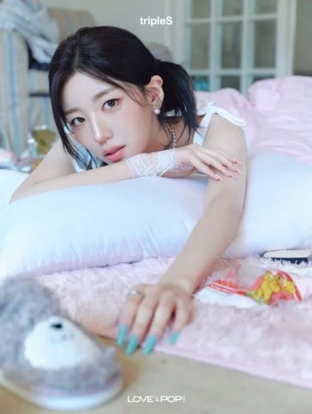
SoHyun (박소현) · S14 · Idole productrice · Coréenne
Xinyu (신위) · S15 · Leader · Chinoise
Mayu (마유) · S16 · Leader · Japonaise
Lynn (린) · S17 · Main Dancer · Japonaise
JooBin (주빈) · S18 · Chanteuse · Coréenne
HaYeon (정하연) · S19 · Leader · Coréenne
ShiOn (시온) · S20 · Main Vocalist · Coréenne
ChaeWon (채원) · S21 · Membre · Coréenne
Sullin (설린) · S22 · Leader · Thaïlandaise
SeoAh (서아) · S23 · Maknae · Coréenne
JiYeon (지연) · S24 · Membre · Coréenne